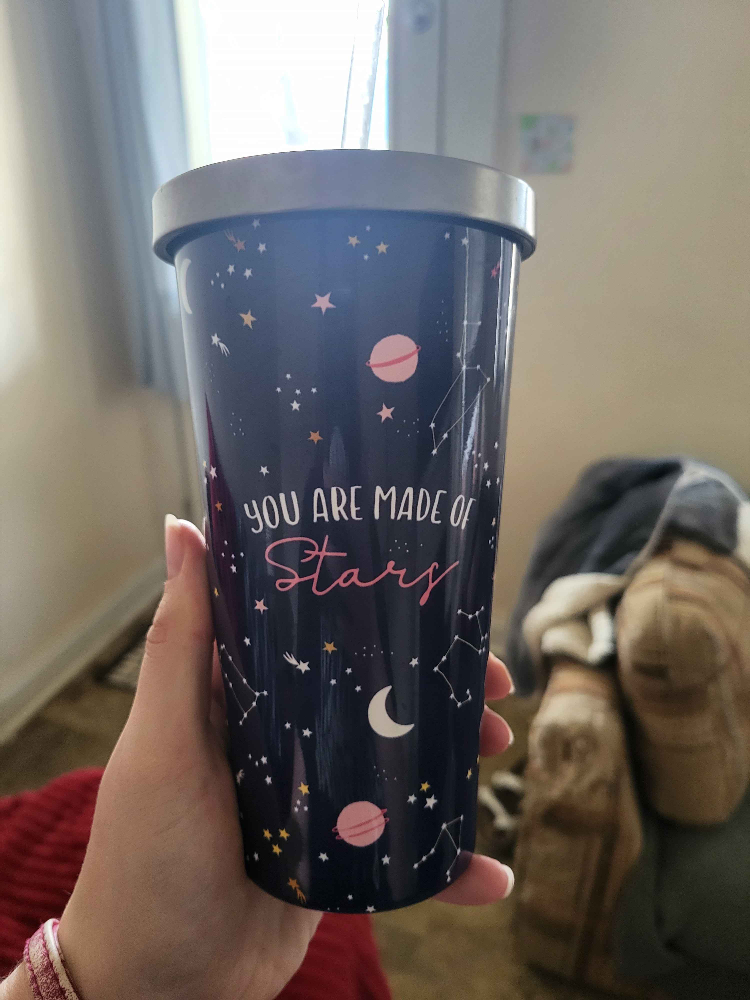

First date: Her Story
It started on Tinder. He looked like a guy who loved adventures and his bio mentioned homemade noodles, good combo so I swiped right. He agreed and we decided on a restaurant in my town, El Toril. Turns out we both love Mexican food and salsa. I remember pulling up and nervously texting my friend that I was there. After some encouraging words from my BFF, I went in. I saw someone sitting on the left side by himself so I asked if he was Eric and he shook his head yes. Oh boy, here we go, I thought. I walked over introduced myself and.... shook his hand, odd but he's cute so I'll let it slide (I, in fact, did not let this slide lol). We talked for soo long, I couldn't focus because I was so nervous and giddy. I finally ordered something, and we talked some more. I was so nervous it was hard to eat, so I didn't eat much. We ended up talking for so long at one point we were the only ones in the restaurant. (They turned the music up on us because we were too loud, oops) I decided I didn't want the date to end there so I asked if we wanted to do anything else or if he'd like to go home. We decided to do other stuff and loaded into his car. It was so much fun just driving and laughing I also learned that I loved hearing him sing. He wasn't too shabby. We went to Huntington and he showed me this store that had a bunch if books, comics, and figurines in it. I gravitated towards the book section after he walked me around the store. This lead us to end up going to one of my favorite places, Books-a-Million. On the way there I learned that Eric is rough on the brakes, I almost wore my drink several times So to make up for it once at BAM (Books-a-Million), he bought me my own cup. It's now my favorite cup to drink from.

We then decided to go get ice cream, I love ice cream, so I was super excited. The little shop was cute and had soooo many options; I didn't know what to get. So, when Eric said surprise me, I thought, “Well why not I'll do it too, except for mint, I don't like mint ice cream.” It was really good. -Eric ended up eating my leftovers- Then he drove me home, and I was so happy and comfortable with him that I almost fell asleep in the car on the way back. He was super sweet and funny. When we made it back to my car at El toril we talked for a little while longer and then he asked me for a goodbye kiss. Such a gentleman. I drove home with such a huge smile my face hurt. Our first date was only supposed to go on for a few hours, it ended up being like seven. Worth every second, I'd do it again in a heartbeat. Within a week we had a second date planned, and the rest is history.